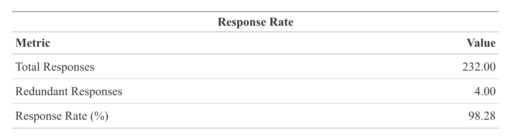
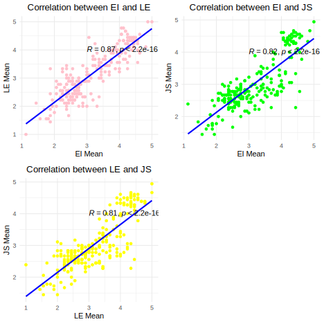

Leader’s Emotional Intelligence and Job Satisfaction: The Mediating Effect of Leadership Effectiveness
Yangyang Fu
Department of Social Science, University of Chicago
Author Note
Yangyang Fu  http://orcid.org/0000-0000-0000-0001
http://orcid.org/0000-0000-0000-0001
The authors have no conflicts of interest to disclose.
Correspondence concerning this article should be addressed to Yangyang Fu, Department of Social Science, University of Chicago, 5801 South Ellis Avenue, Chicago, IL 60637, USA, Email: fyy@uchicago.edu
Abstract
Keywords: Leaders’ emotional intelligence, leadership effectiveness, job satisfaction
Leader’s Emotional Intelligence and Job Satisfaction: The Mediating Effect of Leadership Effectiveness
Introduction
Job satisfaction is highly researched in industrial/organizational psychology and is related to the development of organizations worldwide. It is also noted as a predictor for assessing the efficiency and effectiveness of organizations. Irabor and Okolie (2019) refer to job satisfaction as employees’ emotional response to a job, which could be viewed as the sum of contentment and pleasure. Irabor and Okolie (2019) indicated that job satisfaction can influence attendance rate, productivity, organizational loyalty, and life satisfaction. Low employee job satisfaction would result in a higher possibility of avoiding the workplace and decreased productivity and quality. The accumulation of negative emotions keeps increasing and ultimately accounts for turnover.
Helm (2013) claimed that job satisfaction correlated with employees’ pride and organizational reputation. High job satisfaction in the organization could positively influence employees’ sense of group honor and assist in fostering the organization’s reputation, attracting excellent elites. Furthermore, job satisfaction was strongly associated with mental health problems (Faragher et al., 2005), which means satisfied employees are less likely to be overstressed and anxious.
Employee job satisfaction could be impacted by satisfaction with pay, promotion opportunities, and fringe benefits, no matter monetary or nonmonetary reward, organizational rules, and so on (Kardam & Rangnekar, 2012). Organizational culture is one of the factors that influence employees’ job satisfaction (Lund, 2003). Organizational values or norms shape or change individuals’ behaviors, imperceptibly or compulsively. For example, Thekedam (2010) mentioned that recognition from supervisors or coworkers, no matter blame or praise, is a crucial factor influencing job satisfaction. Recognition programs can contribute to maintaining employees’ self-esteem and enthusiasm at high levels (Danish & Usman, 2010). It could fulfill employees’ psychological needs within the workplace, thus increasing their motivation. Statista Research Department (BambooHR, 2016) that over 80% of employees feel satisfied working in companies with a recognition program, whether formal or informal, whose satisfaction rate is 30% higher than those working for companies with no recognition program. A significant component of the organizational culture is leadership behaviors, including trustiness, role modeling, and communication, which also showed a positive relationship with employees’ outcomes and satisfaction (Chiok Foong Loke, 2001).
Leadership behaviors are directly associated with Emotional Intelligence (EI), and the degree of EI in a leader can shape the leadership behavior. As the complexity of the relationships between individuals and organizations rises, EI also begins to be recognized as a significant personality trait for workplace success (BambooHR, 2016). Moreover, EI skills are utilized as criteria for many organizations in the Western world to achieve career selection and placement purposes, thus becoming a crucial element of management philosophy (Zeidner et al., 2004). Yadav and Lata (2019) defined EI as an ability to notice and understand other’s emotions and apply this information to influence people’s behavior and thinking. It implies that people with strong EI can handle interpersonal conflicts, help find potential problems, and provide emotional support (Atoum & Al-Shoboul, 2018; Tanveer et al., 2019). Employees’ job satisfaction is considered one of the outcomes of leaders’ EI influence.
Moreover, leadership effectiveness is regarded as leaders’ effects on the group’s performance on the tasks (Levine & Moreland, 2006). Leaders with high EI have solid social skills to navigate complex interpersonal relationships and assign functions to proper employees, meaning they may influence their leadership effectiveness. In addition, leadership effectiveness, whose one indicator is the performance management system (Rosete & Ciarrochi, 2005), may related to employees’ attendance and their attitude to organizational rules and procedures. For example, a leader able to handle their own and employees’ emotions would be able to solve interpersonal conflicts effectively and help build up work achievability, thus demonstrating high effectiveness. Therefore, these links suggest that the link between a leader’s EI and an employee’s Job Satisfaction can be explained by leadership effectiveness.
We know that recognition (Thekedam, 2010), organizational culture (Lund, 2003), and leadership behavior (Chiok Foong Loke, 2001) can exert impacts on employees’ job satisfaction in terms of different angles. Some studies investigate how employees’ EI influences job satisfaction in Western and European countries. There is still limited information, and data about leaders’ EI in the context of Chinese background is scarce. Liu et al. (2018) argued that Chinese national culture is immersed in Confucian philosophy, emphasizing people and relationship focus, influencing organizations’ operations and conduction. Compared to Western countries, relationships are particularly crucial within Chinese organizations, which offer a significant position for EI. Furthermore, relationship governance and definitions are not identical in business between China and Western countries. According to Chu (2020), the “relationship” in Chinese is also named Guanxi, which is usually nurtured and facilitated through conversations, meetings, and meals started by Chinese people or organizations, leveraging connections based on mutual obligations and exchanging favors. In contrast, Western organizations focus on trust and commitment, relying on self-enforce and avoiding opportunistic behavior (Chu, 2020). In Guanxi, affection is essential in organizational behavior and employee commitment, influencing job satisfaction. Affection is a key feature differentiating Chinese culture from other cultures (Wu, 2020). Wu (2020) also discovered that employee affective commitment could positively affect decreasing elements, including turnover and absenteeism rates that reflect job satisfaction. Hence, exploring the influence of leaders’ EI within Chinese cultural contexts is essential to a meaningful endeavor to understand to what degree the EI of leaders in the Chinese context leads to leadership effectiveness as an underlying mechanism for employee job satisfaction. Understanding the effect of leaders’ EI could help determine how to improve the organization’s promotion system and increase the organization’s efficiency and effectiveness in the Chinese context. Moreover, leadership development programs could be designed to increase leaders’ self-awareness and fix shortcomings to increase leadership effectiveness in line with the Chinese culture, increasing employees’ job satisfaction and avoiding adverse impacts such as high turnover. Thus, the current study aims to investigate how leaders’ EI predicts employees’ job satisfaction and understand the mediating effects of leadership effectiveness between the two variables in the Chinese context.
The research question of this study is :
Are there any mediating effects of leadership effectiveness between leaders’ emotional intelligence and employee job satisfaction?
This research seeks to answer this question based on a specific cultural background. It aims to examine the direct or indirect effects of leaders’ EI on job satisfaction through the mediating role of leadership effectiveness.
Therefore, the study hypotheses that:
H1: Leaders’ emotional intelligence will predict employee job satisfaction.
H2: Leaders’ emotional intelligence will predict Leadership effectiveness.
H3: Leadership effectiveness will predict employee job satisfaction.
H4: Leadership effectiveness will mediate leaders’ emotional intelligence and job satisfaction.
Literature Review
Job Satisfaction
Job Satisfaction is widely researched by many researchers, whether in industrial organization psychology or management, due to its importance to employees’ mental health and organizational development. Cumbey and Alexander (1998) described job satisfaction as a feeling depending on the interplay between employees and personal traits, values, and expectations. Locke (1969) specifically defined job satisfaction as a positive emotional state arising when someone agrees to achieve their values and goals in the workplace; job dissatisfaction was negative feelings resulting from being unable to attain their values and goals. Aziri (2011) also defined job satisfaction as a combination of feelings and beliefs about their current work, which ranges between extremes (extreme satisfaction and extreme dissatisfaction). An encompassing definition of job satisfaction can be seen as feelings about work experience, including fulfillment and engagement, a working environment, and interpersonal relationships.
Numerous studies relate job satisfaction with employee performance; for example, Inuwa (2016) found a significant positive relationship between employee satisfaction and employee performance. The study found that an increase in job satisfaction of employees can directly lead to higher performance. Aziri (2011) also gave similar results, which implies that employees who are satisfied due to some recognition and rewards are more likely to lead to more significant performance effort and achieve a higher level of job performance. Moreover, Khan et al. (2012) also found that high-level job satisfaction can predict better employee performance in Pakistan.
However, little research has been conducted on employees’ job satisfaction in the Chinese context. The last four decades of research before 2009 on job satisfaction and work outcomes were based on Western culture, and Han and Kakabadse (2009) also highlighted that job satisfaction was closely related to culture, such as Hofstede’s six cultural dimensions, which means specific cultural contexts would have some impacts, such as deeply rooted Confucianism perspective (Zhang et al., 2019). In addition, according to Hofstede’s theory about six cultural dimensions, China has a high score in power distance, which may lead to downward pressure on employees and the ignoring of leaders themselves. Lu et al. (2011) said that heavy workload and especially interpersonal conflict play an important role in work stress in the Greater China Zone. Zhang et al. (2019) explained that a Confucian-based work ethic characterized by hard work, endurance, collectivism, and “guanxi” (personal network) expected Chinese employees to take full responsibility, promote social harmony, and advance collective interests. The working environment produced under the cultivation of Chinese culture leads to different expectations from organizations and leaders, as well as different working standards in employees’ hearts. A past study conducted by Luu and Hattrup (2010) found that high job satisfaction is related to low turnover intention in America. However, some researchers, such as Wong et al. (2001), indicated that job satisfaction can’t effectively predict turnover intention within China. Therefore, looking into the Chinese context could help to figure out the feelings of employees and develop customized programs to improve conditions. There are five primary dimensions of job satisfaction, including salaries, promotion opportunities, supervision, nature of work, and colleagues, according to the research by Aslaniyan and Moghaddam (2013). They clarify that pay satisfaction is related to feelings of deserving and worthy; promotion satisfaction is linked to organizations’ policy, fairness, and employees’ ability; supervision and colleagues mean their feelings for bosses and co-workers; the nature of work represents characteristics of work itself, including challenge, interest, and comfort (Aslaniyan & Moghaddam, 2013). Waqas et al. (2014) also mentioned that reward and recognition and the workplace environment can also influence it, respectively contributing to 49.8% and 25.7% of job satisfaction levels. A reward as a tangible gift and recognition are both used to acknowledge the public or organization’s employees’ contribution (Waqas et al., 2014), which can motivate employees and increase their job satisfaction, whether mentally or physically. Working environment, including lighting, temperature, workspace, and ambient conditions, can influence employees’ perception of comfort (Waqas et al., 2014). The present study will examine job satisfaction in the Chinese context to figure out how it would be influenced by leaders’ EI and find ways to improve the current situation of low job satisfaction in China.
Leader’s Emotional Intelligence
EI is considered a significant tool for interacting with people, whether in a small conversation or on other essential occasions. In 2019, more than 50% of organizations respondents worldwide indicated that they would evaluate senior and mid-management EI skills and choose to hire them or not based on it (Capgemini, 2019). The high percentage of EI measures used reveals the growing importance of EI in organizational management. The high percentage of EI measures used reveals the growing importance of EI in organizational management. According to Yadav and Lata (2019), EI has already been established in some non-cognitive metrics, including problem-solving skills. They also summarize Goleman’s definition of EI into four kinds of abilities: zeal, self-control, self-motivation, and persistence, characterized by understanding, managing, and recognizing emotions, and handling motivations and relationships (Yadav & Lata, 2019). Mayer et al. (1990) divided EI into four branches as well, including appraising and perceiving, assimilating, understanding, and regulating emotions. Here is a tricky point Ramesar et al. (2009) suggested about emotion concepts: emotions are shorter and more intense than moods. Martinez (1997) defined EI more concisely into non‐cognitive skills, capabilities, and competencies, which determine how people manage and respond to environmental challenges and pressure. Most definitions of EI talk about the ability to manage and sense emotions instead of moods, converting them into effective actions and interactions.
Some researchers found that EI correlated with people’s stress management, which could be considered as a component, input, and even outflow (Ramesar et al., 2009), and it can positively influence and help with finding effective strategies for coping with stress (Ramesar et al., 2009; Wang et al., 2016). According to Wang et al. (2016), college students with high EI have a great positive effect and can regulate their emotions better, leading to increased self-confidence and improved ability to handle pressure in situations. A study that used qualitative unstructured depth interviews done by Pau et al. (2004) indicated that students who have a higher level of EI can cope with stress better by utilizing skills of self-reflection and assessment, social and interpersonal interactions, as well as effective organization and time-management abilities. The research assessed students’ EI and coping strategies through their answers in the conversation and discovered that students with high EI can tell whether their behaviors and actions are appropriate. Additionally, Ivcevic et al. (2021) declared that leaders’ emotional intelligence behavior is one of the job sources, motivating and resonating with employees emotionally and ultimately effectively predicting employee’s creativity behaviors. Darvishmotevali et al. (2018) also found that EI had a significant impact on employees’ creativity performance. Regarding the relationship between EI and creativity, Geher et al. (2017) explained that the ability to feel others’ feelings accurately finds what is amusing for people, which also means people who have high EI are capable of jumping out of the box.
In common research, EI is usually measured by self-report scales using quantitative methods. Augusto Landa et al. (2008) did a questionnaire survey to investigate the relationships between EI, work stress, and health. Self-report scales were used to evaluate participants’ EI. They found that EI serves as a protective element against stress and promotes overall health and well-being (Augusto Landa et al., 2008). However, the accuracy of the EI self-report is questioned. Rosete and Ciarrochi (2005) insisted that self-report scales are easily influenced by respondents’ personalities, leading to some confusion. The domain research about EI uses self-reporting to assess, but little research has been conducted to study leaders’ EI through others’ observations. Moreover, Gökçen et al. (2014) said East Asian individuals typically tend to show self-criticism and emphasize negative self-relevant information compared to North Americans. Self-perception, as a crucial aspect of EI, influenced by cultural differences and tendencies, can be essential to outcomes in China compared to different countries. That’s the reason why the present study aims to discover how leaders’ EI is evaluated by subordinates’ work and how East Asian special perspectives would influence the process compared to Western countries. Factors including personal factors that influence EI are still controversial (Rauf et al., 2013); for example, Van Rooy et al. (2005) found there was a significant difference between males and females, but others held opposite ideas (Katyal & Awasthi, 2017). Rauf et al. (2013) discovered that their study showed only family monthly income, not parents’ employment and parental educational level, has a positive relationship with EI. However, it is inconsistent with the research done by Davis-Kean (2005), which supported that parents’ educational background can positively influence children’s EI. This study investigates leaders’ EI through others’ evaluation and observation in the context of the Chinese working environment and identifies its effect on leadership effectiveness and subordinates. Moreover, it could help organizations improve leaders’ selection systems and facilitate the forming of more suitable and efficient teams.
Leadership Effectiveness
Leadership Effectiveness is one of the important elements in evaluating leadership and outcomes, and it’s also a determined factor for teams or organizations in achieving success. Leadership effectiveness can be understood as successful outcomes in achieving common goals or missions from leaders’ influence. Sadeghi et al. (2012) said it highly depends on the consequences and impacts of leaders’ activities on their followers, teams, or organizations. Many studies have found that leadership effectiveness was correlated with leadership styles. Sadeghi et al. (2012) claimed that transformational leadership behavior can motivate followers and have positive impacts on the organization’s effectiveness and productivity. Sonmez Cakir and Adiguzel (2020) argued that leadership effectiveness is a wavier behavior that is exchanged for organizations’ benefits, which can inspire employees’ behaviors and shape their goals through enhancing employees’ commitments and motivations, thus leading to a positive impact on organizations. Furthermore, leadership effectiveness can influence engaging employees’ “beliefs, attitudes, norms, values, and behaviors” in the long-term (Sonmez Cakir & Adiguzel, 2020, p. 2). According to Rawat et al. (2023), efficient leadership from successful leadership can foster and facilitate a sense of confidence and independence within teams, ensuring they can cope with dynamic environments. It could also help form adaptive resilience, including changing plans to adapt, thrive, and recover during the crisis (Rawat et al., 2023).
Personality traits are also proven to have an influence on leadership effectiveness, such as stress tolerance, socialized power motivation, achievement orientation, and need for affiliation (Hartman, 1999). Some metrics, including followers’ attitude, group process quality, group cohesiveness, etc., are usually used to evaluate leadership effectiveness (Hartman, 1999). In addition, leadership dimensions, in other words, leadership styles such as transformational, transactional, and laissez-faire styles, exert different impacts on leadership effectiveness (Yahaya & Ebrahim, 2016). Specifically, Laissez-faire leaders tend to ignore issues, avoid decision-making, and refuse to follow through and intervene, ultimately leading to a lack of leadership effectiveness (Yahaya & Ebrahim, 2016). In contrast, Yahaya and Ebrahim (2016) realized that the other two leadership styles can positively influence leadership effectiveness to different degrees. Poturak et al. (2020) indicated that the transformational leadership dimension could positively increase leadership effectiveness through idealized influence, inspirational motivation, intellectual stimulation, and individual consideration. However, transactional leadership utilizes rewards or sanctions as incentives to motivate individuals to pursue self-interest and simultaneously achieve organizations’ or teams’ goals (Jacobsen et al., 2022).
Factors that influence leadership effectiveness also include communication competency (Schuetz, 2017) and the language of leadership (Lowenhaupt, 2014). Schuetz (2017) claimed that communication competency plays an important role when leaders try to set visions and directions for a team or organization. Nguyen et al. (2022) indicated that communication skills are linked to emotional intelligence, and they assist each other in formulating a comfortable environment and maintaining group relationships, achieving harmony and unity of purpose. To sum up, leadership effectiveness is a critical factor in evaluating leaders’ or teams’ outcomes, and it is important for researchers to investigate whether it has mediation effects on EI and job satisfaction.
Vilkinas et al. (2009) argued that China’s cultural and institutional environment differs from the development environment of Western dominant leadership theory. They also argued that these differences significantly differ in leadership behaviors related to leadership effectiveness (Vilkinas et al., 2009). Hassan et al. (2018) indicated that context and leaders’ skills are still critical issues when discussing leadership effectiveness. Furthermore, many past studies invested leadership effectiveness as an independent or dependent variable or directly seen as an adjunct of leadership. Little research makes detailed descriptions of leadership effectiveness or perceives it as a mediator between two other factors. That’s the reason why this present study aims to examine the mediation effects of leadership effectiveness in Chinese culture. Interestingly, Hassan et al. (2018) found that the literature on the relationship between leadership effectiveness and organizational performance is controversial and full of differences and divergent findings. Inconsistent findings bring a big challenge to exploring the impacts of leadership effectiveness.
Method
The current study is a cross-sectional study aiming to investigate the relationship between leaders’ emotional intelligence and employee job satisfaction, determining the mediating effects of leadership effectiveness on them. The reasons for conducting a cross-sectional survey are its advantages, including flexibility, time-saving, and lower costs (Connelly, 2016), which could help to collect data efficiently within months. In addition, the study aims to discover variables in a single period of time, and a cross-sectional study is suitable for this purpose.
Participants
A sample of 232 respondents participated in the research, including interns and official employees from several industries, including education, Manufacturing, Construction, the Internet, Electric gas, and many other sectors working in China. In addition, the present study chose a non-probability form of sampling: a convenience sampling technique characterized by economy, convenience, and simpleness (Stratton, 2021). Moreover, among the participants, 57.6% were female, and only one person preferred not to tell; 34.9% were interns, 21.4% were from the education industry, and all participants were over 18.
Instruments
Leaders’ Emotional Intelligence Scale
Hu et al. (2023) claimed that leaders’ EI could be measured from emotional appraisal of self and others, use of emotion, and emotional regulation. This scale contained 16 items and four items for each aspect. The Cronbach’s alpha was 0.924, greater than 0.3, which indicated that the scale could give consistent results (Hu et al., 2023). A 5-point Likert scale ranging from strongly disagree, disagree, neutral, agree, to strongly agree was used as a tool. Here are some examples: “My leader has a good sense of why he has certain feelings most of the time.” “My leader always knows his friends’ emotions from their behavior.” “My leader always sets goals for himself and then tries his best to achieve them.” “My leader is able to control his temper and handle difficulties rationally.”
Leadership Effectiveness Scale
The research measured leadership effectiveness through the scale from Kerr et al. (2006), which a third party generated as a 10-point Likert scale. The present research modified it into a 5-point Likert scale for consistency with other scales. There was a total of 9 items. Here are some examples: “I feel at ease with my supervisor when asking questions” and “My supervisor asks me how I am doing on a regular basis.”
Job Satisfaction Scale
Employees’ job satisfaction would be measured by the 5-point Likert job satisfaction scale developed by Brayfield and Rothe (1951). The reliability coefficient was 0.77, “which was corrected by the Spearman-Brown formula to 0.87” (Brayfield & Rothe, 1951, p. 310). To keep a consistent result, answers to some questions would be reversed in the data analysis process. Here are some examples, “My job is like a hobby to me.” “I am often bored with my job.” “I am satisfied with my job for the time being.”
Procedure
The data collection was conducted during the 2024 spring semester, lasting for three months. The survey was designed and published by utilizing Sojump, a questionnaire platform. It was spread mainly through social media, including WeChat, Weibo, and Xiaohongshu. The entire questionnaire took respondents about 6 minutes to finish. The survey mainly contained three sections. The first section is a consent form where students are informed that their responses and information are confidential and will only be used for research. It clearly states, “Participation in this study is purely voluntary.” The second section is the part where participants are asked to rate the questions about their leaders’ emotional leadership, leadership effectiveness, and job satisfaction. The third section collects demographic information.
Data analysis
Missing Data
Emmanuel et al. (2021) claimed that missing data problems could lead to performance degradation, biased data analysis, and outcomes. After checking the data, no missing data was found.
Outliers
A univariate outlier analysis was used in the present study. According to Mowbray et al. (2019), univariate outliers are extreme values different from domain cases. Range function was used to identify errors in data entry. 4 responses were found invalid because the same answers were used for all rating scales, which were deleted before conducting data analysis.
Response Rate
The present study distributed questionnaires online, and 232 people responded. However, three respondents were excluded from the analysis for giving redundant responses. Among the data, four respondents gave the same results on all Likert Scale. 228 questionnaires remain for further data analysis. Thus, the response rate was 98.28%.

Normality
In the current study, the Kurtosis and Skewness were conducted, revealing that for the variable of leaders’ emotional intelligence, the values of Kurtosis and Skewness were -1.109 and 0.165; for the variable of leadership effectiveness, the values of Kurtosis and Skewness were -0.957 and 0.102; for the variable of Employee Job Satisfaction, the values of Kurtosis and Skewness were -0.479 and 0.649. George and Mallery (2010) indicated that the values for skewness and kurtosis of variables are suitable when ranging from -2 to +2. Therefore, the values prove that leaders’ emotional intelligence, leadership effectiveness, and job satisfaction are in a normal univariate distribution. The values of Kurtosis and Skewness are shown in Normality Analysis table.

Descriptive statistics
According to Marshall and Jonker (2010), descriptive statistics describe the characteristics of the raw data, including central tendency, dispersion, mean, median, standard deviation, and so on. It is an easy and helpful method for researchers to summarize the sample while assisting in further data analysis.The mean for leaders’ emotional intelligence people rate was 3.18 (SD = 0.85); the mean for leadership effectiveness was 3.17 (SD = 0.85); and the mean for job satisfaction was 3.03 (SD = 0.8).Additionally,Correlation between EI, JS, and LE table declared that there were positive relationships between leaders’ EI, leadership effectiveness, and employee job satisfaction.

Final analysis- Hypothesis Testing
H1: Leaders’ emotional intelligence will predict employee job satisfaction.
Results discovered that a leader’s emotional intelligence was a significant predictor of job satisfaction (β=0.765; SE = 0.035; p < .001). This indicates that higher leaders’ emotional intelligence can be considered a predictor of higher employee job satisfaction. In other words, employees working on a team with leaders with high emotional intelligence tend to report high job satisfaction.
H2: Leaders’ emotional intelligence will predict Leadership effectiveness.
Results found that leaders’ emotional intelligence was a significant predictor of leadership effectiveness (β = 0.873; SE = 0.032; p < .001). It means that groups or teams with leaders who have high emotional intelligence can predict the emergence of leadership effectiveness. In other words, leaders with higher emotional intelligence and higher leadership effectiveness may emerge.
H3：Leadership effectiveness will predict employee job satisfaction.
Results indicated that leadership effectiveness emerged as a significant predictor of employee job satisfaction (β=0.756, SE = 0.036; p < .001). It implies that leadership effectiveness can positively influence employee job satisfaction. In other words, employees working in an environment that embraces good leadership effectiveness tend to be satisfied with their jobs.
H4: Leadership effectiveness will mediate leaders’ emotional intelligence and job satisfaction.
To determine whether there is a mediation effect of leadership effectiveness between leaders’ emotional intelligence and employee job satisfaction, the method proposed by Baron and Kenny (1986) was taken. To be concise, the simple regression analysis was run separately with IV (leaders’ emotional intelligence) predicting mediator (leadership effectiveness) and DV (job satisfaction), and mediator predicting DV. Then, a multiple regression analysis was conducted with all variables, including IV, mediator, and DV. The connection between the predictor and dependent variable weakens when the intervening variable is controlled.
The analysis indicated that when leadership effectiveness was entered into the equation, the decrease in the direct path between emotional intelligence and job satisfaction was statistically significant (Z= 16.443, p <.001). It implies that leadership effectiveness partially mediates the relationships between leaders’ emotional intelligence and leadership effectiveness. In other words, leadership effectiveness can strengthen the mechanism of leaders’ emotional intelligence effects on job satisfaction.
Discussion
This study aimed to discuss the relationship between leaders’ emotional intelligence and employee job satisfaction and explore the mediating role of leadership effectiveness between them. The current research proposed four hypotheses, and the results are discussed below:
H1: Leaders’ emotional intelligence will predict employee job satisfaction:
The results indicated that leaders’ EI could predict employee job satisfaction (β=0.765, p < .001); thus, hypothesis 1 was accepted. The strong relationship between leaders’ EI and job satisfaction suggests that leaders with higher EI are more likely to foster a positive environment for employees to achieve higher job satisfaction. In other words, leaders who are better at understanding and managing emotions can help employees feel fulfilled and happy with their work. This finding emphasized the importance of leaders’ ability to handle the feelings and needs of their own and others when promoting employee job satisfaction. The current finding is aligned with the prior research, showing the considerable prediction of leaders’ EI on employee job satisfaction (Miao et al., 2016; San Lam & O’Higgins, 2012; Sy et al., 2006). According to Sy et al. (2006), managers with high EI are related to positive attitudes to the job and altruistic actions, including kindness and support. Vlachos et al. (2013) indicated that managers’ altruistic behaviors positively correlate with employee corporate social responsibility-induced intrinsic and extrinsic attribution, which could offer employees meanings of the work and challenge goals, fulfilling their sense of achievement and strengthening job satisfaction ultimately. We can understand that about half of the employees and interns in the current study work with leaders who have high-level EI. They brought positive attitudes to the job, and their altruistic behaviors assisted employees in achieving fulfillment and satisfaction.
H2: Leaders’ emotional intelligence will predict Leadership effectiveness.
The results revealed that leaders’ EI could predict leadership effectiveness (β = 0.873, p < .001); thus, the hypothesis 2 was accepted. The predictive relationship between leaders’ EI and leadership effectiveness indicated that leaders’ EI level could forecast their effectiveness in leadership roles in teams or organizations. Specifically, leaders who are good at navigating emotions and handling conflicts and changes are likelier to have efficient and effective project outcomes. The present findings are aligned with previous research asserting the positive predictive relationship between leaders’ EI and leadership effectiveness (Edelman & van Knippenberg, 2018; Judge et al., 2004; Lone & Lone, 2018). According to Görgens-Ekermans and Roux (2021), EI is correlated with leadership style, primarily transformational leadership. They also indicated that the path influences leadership effectiveness by EI involving conflict management skills and coaching and mentoring behaviors. In addition, Managers could apply EI principles in the workplace to overcome barriers, address and resolve conflicts, and finally accomplish team goals and outcomes. As mentioned before about EI, half of the respondents in the current study experience good leadership effectiveness. Their leaders might show a good ability to sense their emotions and help manage conflicts in the workplace.
H3: Leadership effectiveness will predict employee job satisfaction.
The results declared that leadership effectiveness could predict employee job satisfaction (β=0.756, p < .001); thus, hypothesis 3 was accepted. This means that there is a predictive effect of leadership effectiveness on employee satisfaction with the job, including happiness and fulfillment. In other words, employees working with leaders who successfully influence followers to achieve common goals and missions and gain effective outcomes are likelier to demonstrate high job satisfaction. This finding parallels the previous results that claimed that leadership effectiveness can positively influence and forecast employee job satisfaction (Jahro et al., 2022; Yukl et al., 2019). Leaders who can lead to high leadership effectiveness indicate that they have better communication language (Lowenhaupt, 2014; Schuetz, 2017) and ensure team harmony such as confidence (Rawat et al., 2023), making employees feel comfortable with the working environment. In the current study, half of the respondents who are employees and interns found their leaders have high-quality leadership effectiveness, helping reduce harmful efforts from factors affecting satisfaction.
H4: Leadership effectiveness will mediate leaders’ emotional intelligence and job satisfaction.
The results asserted that leadership effectiveness could partially mediate the relationship between leaders’ EI and employee job satisfaction (Z= 16.443, p <.001). It suggested that leadership effectiveness was a tool that facilitated the effects of leaders’ EI on employee job satisfaction. Namely, successful leadership effectiveness, such as offering a comfortable communication environment, can assist leaders’ EI behavior by giving emotional support, which better satisfies employees’ feelings. Leadership effectiveness involves emotions (Kerr et al., 2006), like EI, which implies that leadership effectiveness could reflect the EI effect, and EI can affect leadership effectiveness. However, some outside elements could also contribute to leadership effectiveness, such as organizational policies (Chan, 2002). With the synergistic action of many factors, leadership effectiveness is not only a reflection of EI but a combination of facilitators. Thus, leadership effectiveness showed a partial mediation effect and decreased the direct impact of leaders’ EI when it got involved.
Significance
This study gives some insights for organizations and managers to help improve employee job satisfaction, achieving higher productivity and efficiency. The present research recommends that organizations consider leaders’ EI a criterion when evaluating candidates and making promotion decisions. Additionally, training programs were advocated to be designed for managers and leaders for the purpose of developing their EI and related skills. Moreover, this study emphasized the importance of self-reflection and feedback, which could assist in improving self-awareness and fixing shortcomings. Besides, organizations and leaders should ensure the alignment of values and behaviors. Because values, beliefs, and behavior are highly related to leadership effectiveness in the long term (Sonmez Cakir & Adiguzel, 2020), their consistency could help build trust, commitment, and team spirit, contributing to satisfied employees. In short, regarding recommendations in the discussion, trying to figure out how to improve leaders’ EI and leadership effectiveness could facilitate the research model that this study discussed.
Limitations and Future Directions
Leaders’ EI significantly predicted leadership effectiveness and employee job satisfaction. Additionally, leadership effectiveness was also performed as a mediator that influences the relationship between leaders’ EI and employee job satisfaction. The findings emphasized a new mechanism during the pathway of leaders’ EI to job satisfaction, which gives some insights for organizations or teams on how to help improve employee job satisfaction. As mentioned, EI training programs, reflection and feedback, and alignment with values are good ways to facilitate relationships between these three variables.
There are some limitations of this study. First, the current study used a cross-sectional design. Spector (2019) clarified that cross-sectional research has problems with common method variance and cause-effect relationships. Some occasion factors might influence respondents, lead to bias, and influence common method variance (Spector, 2019). For example, a recent complaint about leaders may influence respondents’ judgment, which serves as the criterion for rating the scales. Additionally, cross-sectional design cannot be observational and prospective (Mahajan, 2015), meaning it cannot give insights over a long time and perceive the dynamic change. The causal conclusion could not be demonstrated through it. Second, the study sample was not big, and it was also a convenient sample. This means the sample cannot accurately represent a broader population, and the selection bias also existed. It can make findings lack generalizability. Third, there is a limitation about the scales. The job satisfaction scale used was too old, which may not be accurate enough for modern people and suitable for the current work situation, which may not be comprehensive. To handle these problems, Spector (2019) suggested that a cross-sectional design could be utilized well if we can establish four elements: establishing covariation, temporal precedence, ruling out alternatives, and explanatory mechanism. Moreover, maybe adding some time elements to the scale may help reduce bias from occasion factors. Additionally, future research should avoid using convenience samples and expand the sample size. Last but not least, future researchers could find a better job satisfaction scale to help evaluate employee job satisfaction.
References
Aslaniyan, M., & Moghaddam, M. S. (2013). A review and modeling on job satisfaction in Zahedan municipality district No. 8(4).
Atoum, A. Y., & Al-Shoboul, R. A. (2018). Emotional support and its relationship to Emotional intelligence. Advances in Social Sciences Research Journal, 5(1). https://doi.org/10.14738/assrj.51.4095
Augusto Landa, J. M., López-Zafra, E., Berrios Martos, M. P., & Aguilar-Luzón, M. D. C. (2008). The relationship between emotional intelligence, occupational stress and health in nurses: A questionnaire survey. International Journal of Nursing Studies, 45(6), 888–901. https://doi.org/10.1016/j.ijnurstu.2007.03.005
Aziri, B. (2011). JOB SATISFACTION: A LITERATURE REVIEW. 3(4).
BambooHR. (2016, April 20). Job satisfaction of U.S. Employees by recognition program 2016. Statista. https://www.statista.com/statistics/745431/job-satisfaction-of-us-employees-by-recognition-program/
Baron, R. M., & Kenny, D. A. (1986). The Moderator-Mediator Variable Distinction in Social Psychological Research: Conceptual, Strategic, and Statistical Considerations. Journal of Personality and Social Psychology, 51(6), 1173–1182.
Brayfield, A. H., & Rothe, H. F. (1951). An index of job satisfaction. Journal of Applied Psychology, 35(5), 307–311. https://doi.org/10.1037/h0055617
Capgemini. (2019, November 13). Organizations assessing and hiring based on emotional intelligence skills 2019. Statista. https://www.statista.com/statistics/1074180/share-organizations-assessing-hiring-emotional-intelligence-worldwide/
Chan, S. (2002). Factors influencing nursing leadership effectiveness in Hong Kong. Journal of Advanced Nursing, 38(6), 615–623. https://doi.org/10.1046/j.1365-2648.2002.02229.x
Chiok Foong Loke, J. (2001). Leadership behaviours: Effects on job satisfaction, productivity and organizational commitment. Journal of Nursing Management, 9(4), 191–204. https://doi.org/10.1046/j.1365-2834.2001.00231.x
Chu, L., Z. (2020). Leveraging interfirm relationships in china: Western relational governance or guanxi? Domestic versus foreign firms. Journal of International Marketing, 28(4), 58–74. https://doi.org/https://doi.org/10.1177/1069031X20963672
Connelly, L. M. (2016). Cross-Sectional Survey Research. Medsurg Nursing, 25(5), 369–370. https://www.proquest.com/docview/1827241811/citation/FB72CCC6A5414408PQ/1
Cumbey, D. A., & Alexander, J. W. (1998). The Relationship of Job Satisfaction with Organizational Variables in Public Health Nursing: The Journal of Nursing Administration, 28(5), 39–46. https://doi.org/10.1097/00005110-199805000-00007
Danish, R. Q., & Usman, A. (2010). Impact of Reward and Recognition on Job Satisfaction and Motivation: An Empirical study from Pakistan. International Journal of Business and Management, 5(2), p159. https://doi.org/10.5539/ijbm.v5n2p159
Darvishmotevali, M., Altinay, L., & De Vita, G. (2018). Emotional intelligence and creative performance: Looking through the lens of environmental uncertainty and cultural intelligence. International Journal of Hospitality Management, 73, 44–54. https://doi.org/10.1016/j.ijhm.2018.01.014
Davis-Kean, P. E. (2005). The Influence of Parent Education and Family Income on Child Achievement: The Indirect Role of Parental Expectations and the Home Environment. Journal of Family Psychology, 19(2), 294–304. https://doi.org/10.1037/0893-3200.19.2.294
Edelman, P., & van Knippenberg, D. (2018). Emotional intelligence, management of subordinate’s emotions, and leadership effectiveness. Leadership & Organization Development Journal, 39(5), 592–607. https://doi.org/10.1108/LODJ-04-2018-0154
Emmanuel, T., Maupong, T., Mpoeleng, D., Semong, T., Mphago, B., & Tabona, O. (2021). A survey on missing data in machine learning. Journal of Big Data, 8(1), 140. https://doi.org/10.1186/s40537-021-00516-9
Faragher, E., Cass, M., & Cooper, C. (2005). The relationship between job satisfaction and health: A meta-analysis. Occupational and Environmental Medicine, 62(2), 105–112. https://doi.org/10.1136/oem.2002.006734
Geher, G., Betancourt, K., & Jewell, O. (2017). The Link between Emotional Intelligence and Creativity. Imagination, Cognition and Personality, 37(1), 5–22. https://doi.org/10.1177/0276236617710029
George, D., & Mallery, P. (2010). SPSS for windows step by step: A simple guide and reference, 17.0 update. Allyn & Bacon.
Gökçen, E., Furnham, A., Mavroveli, S., & Petrides, K. V. (2014). A cross-cultural investigation of trait emotional intelligence in Hong Kong and the UK. Personality and Individual Differences, 65, 30–35. https://doi.org/10.1016/j.paid.2014.01.053
Görgens-Ekermans, G., & Roux, C. (2021). Revisiting the emotional intelligence and transformational leadership debate: (How) does emotional intelligence matter to effective leadership? SA Journal of Human Resource Management, 19, 1279. https://doi.org/10.4102/sajhrm.v19i0.1279
Han, Y., & Kakabadse, N. K. (2009). Job satisfaction: What is its true meaning in Greater China? Asia-Pacific Journal of Business Administration, 1(2), 155–164. https://doi.org/10.1108/17574320910989104
Hartman, L. (1999). A psychological analysis of leadership effectiveness. Strategy & Leadership, 27(6), 30–32. https://doi.org/10.1108/eb054651
Hassan, A., Gallear, D., & Sivarajah, U. (2018). Critical factors affecting leadership: A higher education context. Transforming Government: People, Process and Policy, 12(1), 110–130. https://doi.org/10.1108/TG-12-2017-0075
Helm, S. (2013). A Matter of Reputation and Pride: Associations between Perceived External Reputation, Pride in Membership, Job Satisfaction and Turnover Intentions. British Journal of Management, 24(4), 542–556. https://doi.org/10.1111/j.1467-8551.2012.00827.x
Hu, X., Li, R. Y. M., Kumari, K., Ben Belgacem, S., Fu, Q., Khan, M. A., & Alkhuraydili, A. A. (2023). Relationship between Green Leaders’ Emotional Intelligence and Employees’ Green Behavior: A PLS-SEM Approach. Behavioral Sciences, 13(1, 1), 25. https://doi.org/10.3390/bs13010025
Inuwa, M. (2016). Job Satisfaction and Employee Performance: An Empirical Approach. The Millennium University Journal, 1(1), 90–103. https://doi.org/10.58908/tmuj.v1i1.10
Irabor, I. E., & Okolie, U. C. (2019). A Review of Employees’ Job Satisfaction and its Affect on their Retention. Annals of Spiru Haret University. Economic Series, 19(2), 93–114. https://doi.org/10.26458/1924
Ivcevic, Z., Moeller, J., Menges, J., & Brackett, M. (2021). Supervisor emotionally intelligent behavior and employee creativity. The Journal of Creative Behavior, 55(1), 79–91. https://doi.org/10.1002/jocb.436
Jacobsen, C. B., Andersen, L. B., Bøllingtoft, A., & Eriksen, T. L. M. (2022). Can Leadership Training Improve Organizational Effectiveness? Evidence from a Randomized Field Experiment on Transformational and Transactional Leadership. Public Administration Review, 82(1), 117–131. https://doi.org/10.1111/puar.13356
Jahro, L., Harapan, E., & Tahrun, T. (2022). The Effect of Leadership Effectiveness and Interpersonal Communication on Teacher Job Satisfaction. Journal of Social Work and Science Education, 2(3), 219–226. https://doi.org/10.52690/jswse.v2i3.252
Judge, T. A., Colbert, A. E., & Ilies, R. (2004). Intelligence and Leadership: A Quantitative Review and Test of Theoretical Propositions. Journal of Applied Psychology, 89(3), 542–552. https://doi.org/10.1037/0021-9010.89.3.542
Kardam, B. L., & Rangnekar, S. (2012). Job Satisfaction: Investigating the Role of Experience & Education. Researchers World, 3(4), 16–22. https://www.proquest.com/docview/1285124675/abstract/5421AC1301E24574PQ/1
Katyal, S., & Awasthi, E. (2017). Gender Differences in Emotional Intelligence Among Adolescents of Chandigarh. Journal of Human Ecology, 17(2), 153–155. https://doi.org/10.1080/09709274.2005.11905771
Kerr, R., Garvin, J., Heaton, N., & Boyle, E. (2006). Emotional intelligence and leadership effectiveness. Leadership & Organization Development Journal, 27(4), 265–279. https://doi.org/10.1108/01437730610666028
Khan, A. H., Nawaz, M. M., Aleem, M., & Hamed, W. (2012). Impact of job satisfaction on employee performance: An empirical study of autonomous Medical Institutions of Pakistan. African Journal of Business Management, 6(7), pp. 2697–2705. https://doi.org/10.5897/AJBM11.2222
Levine, J. M., & Moreland, R. L. (Eds.). (2006). Small groups: Key readings. Psychology Press.
Liu, Y., Chan, C., Zhao, C., & Liu, C. (2018). Unpacking knowledge management practices in China: Do institution, national and organizational culture matter? Journal of Knowledge Management, 23(4), 619–643. https://doi.org/10.1108/JKM-07-2017-0260
Locke, E. A. (1969). What is job satisfaction? Organizational Behavior and Human Performance, 4(4), 309–336. https://doi.org/10.1016/0030-5073(69)90013-0
Lone, M. A., & Lone, A. H. (2018). Does Emotional Intelligence Predict Leadership Effectiveness? An Exploration in Non-Western Context. South Asian Journal of Human Resources Management, 5(1), 28–39. https://doi.org/10.1177/2322093718766806
Lowenhaupt, R. J. (2014). The language of leadership: Principal rhetoric in everyday practice. Journal of Educational Administration, 52(4), 446–468. https://doi.org/10.1108/JEA-11-2012-0118
Lu, L., Kao, S.-F., Siu, O.-L., & Lu, C.-Q. (2011). Work Stress, Chinese Work Values, and Work Well-Being in the Greater China. The Journal of Social Psychology, 151(6), 767–783. https://doi.org/10.1080/00224545.2010.538760
Lund, D. B. (2003). Organizational culture and job satisfaction. Journal of Business & Industrial Marketing, 18(3), 219–236. https://doi.org/10.1108/0885862031047313
Luu, L., & Hattrup, K. (2010). An Investigation of Country Differences in the Relationship Between Job Satisfaction and Turnover Intentions. Applied H.R.M. Research, 12(1), 17–39. https://www.proquest.com/docview/864542817/citation/6A4E5769ECBC4F0BPQ/1
Mahajan, A. (2015). Limitations of cross-sectional studies. Neurology India, 63(6), 1006–1007. https://doi.org/10.4103/0028-3886.170110
Marshall, G., & Jonker, L. (2010). An introduction to descriptive statistics: A review and practical guide. Radiography, 16(4), e1–e7. https://doi.org/10.1016/j.radi.2010.01.001
Martinez, M. N. (1997). The smarts that count. HR Magazine, 42(11), 72. https://kean.idm.oclc.org/login?url=https://search.ebscohost.com/login.aspx?direct=true&AuthType=cookie,ip,url,cpid&custid=keaninf&db=b9h&AN=9712072813&site=ehost-live&scope=site
Mayer, J. D., DiPaolo, M., & Salovey, P. (1990). Perceiving Affective Content in Ambiguous Visual Stimuli: A Component of Emotional Intelligence. Journal of Personality Assessment, 54(3–4), 772–781. https://doi.org/10.1080/00223891.1990.9674037
Miao, C., Humphrey, R. H., & Qian, S. (2016). Leader emotional intelligence and subordinate job satisfaction: A meta-analysis of main, mediator, and moderator effects. Personality and Individual Differences, 102, 13–24. https://doi.org/10.1016/j.paid.2016.06.056
Mowbray, F. I., Fox-Wasylyshyn, S. M., & El-Masri, M. M. (2019). Univariate outliers: A conceptual overview for the nurse researcher. Canadian Journal of Nursing Research, 51(1), 31–37. https://doi.org/10.1177/0844562118786647
Nguyen, T. L., Nguyen, H. A. M., Luu, P. T. N., Le, M. A., Nguyen, T. A. T., & Nguyen, N. T. (2022). Leadership and Communication Skills Towards Emotional Intelligence: A Case Study of FPT University in Vietnam. The Journal of Asian Finance, Economics and Business, 9(5), 53–61. https://doi.org/10.13106/jafeb.2022.vol9.no5.0053
Pau, A. K. H., Croucher, R., Sohanpal, R., Muirhead, V., & Seymour, K. (2004). Emotional intelligence and stress coping in dental undergraduates — a qualitative study. British Dental Journal, 197(4), 205–209. https://doi.org/10.1038/sj.bdj.4811573
Poturak, M., Mekić, E., Hadžiahmetović, N., & Budur, T. (2020). Effectiveness of Transformational Leadership among Different Cultures. International Journal of Social Sciences and Educational Studies, 7(3). https://doi.org/10.23918/ijsses.v7i3p119
Ramesar, S., Koortzen, P., & Oosthuizen, R. M. (2009). The relationship between emotional intelligence and stress management. SA Journal of Industrial Psychology, 35(1), 10 pages. https://doi.org/10.4102/sajip.v35i1.443
Rauf, F. H. A., Tarmidi, M., Omar, M., & Yaaziz, N. N. R. (2013). Personal, Family and Academic Factors towards Emotional Intelligence: A Case Study. Emotional Intelligence.
Rawat, S., Deshpande, A. P., Boe, O., & Piotrowski, A. (2023). Understanding Leadership Effectiveness in the wake of challenges: A leadership competency model. HUMAN REVIEW. International Humanities Review / Revista Internacional de Humanidades, 12(1). https://doi.org/10.37467/revhuman.v12.3498
Rosete, D., & Ciarrochi, J. (2005). Emotional intelligence and its relationship to workplace performance outcomes of leadership effectiveness. Leadership &Amp; Organization Development Journal, 26(5), 388–399. https://doi.org/10.1108/01437730510607871
Sadeghi, A., Akmaliah, Z., & lope pihie, Z. (2012). Transformational Leadership and Its Predictive Effects on Leadership Effectiveness. International Journal of Business and Social Science, 3.
San Lam, C., & O’Higgins, E. R. E. (2012). Enhancing employee outcomes: The interrelated influences of managers’ emotional intelligence and leadership style. Leadership & Organization Development Journal, 33(2), 149–174. https://doi.org/10.1108/01437731211203465
Schuetz, A. (2017). Effective Leadership and its Impact on an Organisation’s Success. Journal of Corporate Responsibility and Leadership, 3(3), 73. https://doi.org/10.12775/JCRL.2016.017
Sonmez Cakir, F., & Adiguzel, Z. (2020). Analysis of leader effectiveness in organization and knowledge sharing behavior on employees and organization. Sage Open, 10(1), 2158244020914634. https://doi.org/10.1177/2158244020914634
Spector, P. E. (2019). Do Not Cross Me: Optimizing the Use of Cross-Sectional Designs. Journal of Business and Psychology, 34(2), 125–137. https://doi.org/10.1007/s10869-018-09613-8
Stratton, S. J. (2021). Population Research: Convenience Sampling Strategies. Prehospital and Disaster Medicine, 36(4), 373–374. https://doi.org/10.1017/S1049023X21000649
Sy, T., Tram, S., & O’Hara, L. A. (2006). Relation of employee and manager emotional intelligence to job satisfaction and performance. Journal of Vocational Behavior, 68(3), 461–473. https://doi.org/10.1016/j.jvb.2005.10.003
Tanveer, Y., Tariq, A., Akram, U., & Bilal, M. (2019). Tactics of handling interpersonal conflict through emotional intelligence. Int. J. Information Systems and Change Management, 11(3/4).
Thekedam, J. S. (2010). A Study of Job Satisfaction and Factors that Influence it. Management and Labour Studies, 35(4), 407–417. https://doi.org/10.1177/0258042X1003500401
Van Rooy, D. L., Alonso, A., & Viswesvaran, C. (2005). Group differences in emotional intelligence scores: Theoretical and practical implications. Personality and Individual Differences, 38(3), 689–700. https://doi.org/10.1016/j.paid.2004.05.023
Vilkinas, T., Shen, J., & Cartan, G. (2009). Predictors of leadership effectiveness for Chinese managers. Leadership & Organization Development Journal, 30(6), 577–590. https://doi.org/10.1108/01437730910981944
Vlachos, P. A., Panagopoulos, N. G., & Rapp, A. A. (2013). Feeling Good by Doing Good: Employee CSR-Induced Attributions, Job Satisfaction, and the Role of Charismatic Leadership. Journal of Business Ethics, 118(3), 577–588. https://doi.org/10.1007/s10551-012-1590-1
Wang, Y., Xie, G., & Cui, X. (2016). Effects of Emotional Intelligence and Selfleadership on Students’ Coping with Stress. Social Behavior and Personality: An International Journal, 44(5), 853–864. https://doi.org/10.2224/sbp.2016.44.5.853
Waqas, A., Bashir, U., Sattar, M. F., Abdullah, H. M., Hussain, I., Anjum, W., Aftab Ali, M., & Arshad, R. (2014). Factors Influencing Job Satisfaction and Its Impact on Job Loyalty. International Journal of Learning and Development, 4(2). https://doi.org/10.5296/ijld.v4i2.6095
Wong, C.-S., Wong, Y., Hui, C., & Law, K. S. (2001). The significant role of Chinese employees’ organizational commitment: Implications for managing employees in Chinese societies. Journal of World Business, 36(3), 326–340. https://doi.org/10.1016/S1090-9516(01)00058-X
Wu, W., M. (2020). Examining how ambidextrous leadership relates to affective commitment and workplace deviance behavior of employees: The moderating role of supervisor–subordinate exchange guanxi. International Journal of Environmental Research and Public Health, 17(15), Article 15. https://doi.org/https://doi.org/10.3390/ijerph17155500
Yadav, R., & Lata, P. (2019). Role of Emotional Intelligence in Effective Leadership. 7(2).
Yahaya, R., & Ebrahim, F. (2016). Leadership styles and organizational commitment: Literature review. Journal of Management Development, 35(2), 190–216. https://doi.org/10.1108/JMD-01-2015-0004
Yukl, G., Mahsud, R., Prussia, G., & Hassan, S. (2019). Effectiveness of broad and specific leadership behaviors. Personnel Review, 48. https://doi.org/10.1108/PR-03-2018-0100
Zeidner, M., Matthews, G., & Roberts, R. D. (2004). Emotional Intelligence in the Workplace: A Critical Review. Applied Psychology, 53(3), 371–399. https://doi.org/10.1111/j.1464-0597.2004.00176.x
Zhang, X., Kaiser, M., Nie, P., & Sousa-Poza, A. (2019). Why are Chinese workers so unhappy? A comparative cross-national analysis of job satisfaction, job expectations, and job attributes. PLOS ONE, 14(9), e0222715. https://doi.org/10.1371/journal.pone.0222715
Appendix
Consent to Participate in Research
Research Title: Leader’s Emotional Intelligence and Job Satisfaction: The Mediating Role of Leadership Effectiveness
Research Assistant: Fu, Yangyang
Departments: Department of Psychology, College of Liberal Arts Institution: Wenzhou-Kean University
Contact: +86 18072333510; Email: fuya@kean.edu
Research risk:
Participation in this study is purely voluntary. Participants can choose to stop at any time without negative consequences. Their participation will not involve risks or discomforts more than are common in everyday life. The questions are designed to be non-invasive and respect participants’ privacy.
Confidentiality and Records:
Any information collected for this study will be kept strictly confidential and used for research purposes only. All data, including questionnaires and tests, will be identified by the code assigned to each participant by the online portal, not by the participant’s name. The file containing this assignment will be stored in encrypted form and only researchers associated with this study will have access to this file and the raw data. Study data will not be disclosed to any third party unless we have the express approval of the participant. Participants have access to raw data from this process.
Before starting to participate in this study, you agree to:
You are over 18 years old;
You are an employee or intern;
Your participation in this study is entirely voluntary.
You can leave your studies at any time; if you decide to stop participating in the study, you will not be penalized and you will not lose any benefits to which you are otherwise entitled.
Informed Consent:
I have read and understood the information provided and have had the opportunity to ask questions. My participation in the survey is voluntary and I may withdraw at any time without reason. If you agree to the above content, please click the “Agree” button below to start answering the questions. If you do not agree with the above content, please click the “Disagree” button below to terminate this survey project.
Questionnaire
- 1=Strongly Disagree 2=Disagree 3=Netural 4=Agree 5=Strongly Agree, higher the score means higher Leaders’ Emotional Intelligence/Leaders’ Effectiveness/Job Satisfaction
Leaders’ Emotional Intelligence
LEQ1.My leader has a good sense of why he has certain feelings most of the time.
LEQ2.My leader has a good understanding of his own emotions.
LEQ3.My leader really understands what he feels.
LEQ4.My leader always knows whether or not he is happy.
LEQ5.My leader always knows his friends’ emotions from their behavior.
LEQ6.My leader is a good observer of others’ emotions.
LEQ7.My leader is sensitive to the feelings and emotions of others.
LEQ8.My leader is good understanding of the emotions of people around him.
LEQ9.My leader always set goals for himself and then try his best to achieve them.
LEQ10.My leader always tell himself that he is a competent person.
LEQ11.My leader is a self-motivated person.
LEQ12.My leader always encourages himself to try his best.
LEQ13.My leader is able to control his temper and handle difficulties rationally.
LEQ14.My leader is quite capable of controlling his own emotions.
LEQ15.My leader always calms down quickly when he is very angry.
LEQ16.My leader has good control of his own emotions.
Leadership effectiveness scale
LE1.I feel at ease with my supervisor when asking questions.
LE2.My supervisor asks me how I am doing on a regular basis.
LE3.I feel I am treated in a fair manner.
LE4.My supervisor supports me when I need help.
LE5.Keeping my supervisor informed, I can take initiatives.
LE6.We are involved as a team in solving problems related to our work.
LE7.We are involved as a team in decisions made that affect our work.
LE8.I am involved as an individual in solving problems related to our work.
LE9.I am involved as an individual in decisions made that affect my work
Job Satisfaction Scale
JS1.My job is like a hobby to me.
JS2.My job is usually interesting enough to keep me from getting bored.
JS3.It seems that my friends are more interested in their jobs.
JS4.I consider my job rather unpleasant.
JS5.I enjoy my work more than my leisure time.
JS6.I am often bored with my job.
JS7.I feel fairly well satisfied with my present job.
JS8.Most of the time I have to force myself to go to work
JS9.I am satisfied with my job for the time being.
JS10.I feel that my job is no more interesting than others I could get.
JS11.I definitely dislike my work.
JS12.I feel that I am happier in my work than most other people.
JS13.Most days I am enthusiastic about my work.
JS14.Each day of work seems like it will never end.
JS15.I like my job better than the average worker does.
JS16.My job is pretty uninteresting.
JS17.I find real enjoyment in my work.
JS18.I am disappointed that I ever took this job.
Demographic Questions
- Your Gender:
- Designation:
- Your current industry: